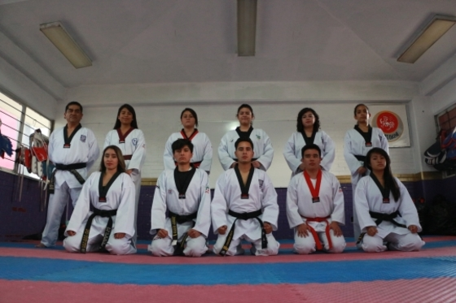
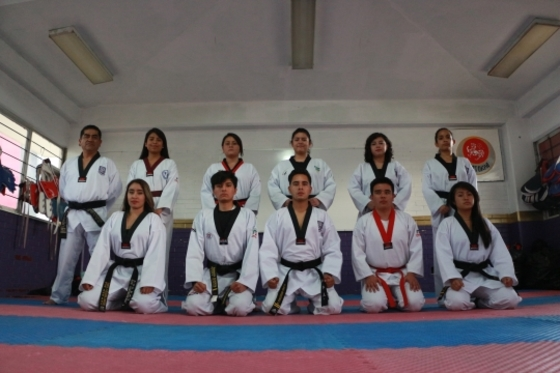

Tae-Kwon-Do
 

Descripción:
ae kwon do, es un término que procede del coreano y hace referencia a un arte marcial del mismo origen, Tae se refiere a la utilización de los pies, Kwon se vincula al empleo de brazos y puños y do lo asocia al camino hacia la perfección. Es una disciplina que ofrece a sus practicantes concentración, confianza, autodefensa ante la asimilación de golpe y de forma personal fortalece el cuerpo y la mente además de permitir una mayor coordinación física y disciplina mental, fomentando la pronta y acertada solución de problemas El taekwondo es un deporte de combate moderno, el cual fue dado a conocer como "Taekwondo" en el año 1955 por El General Choi, siendo convertido en deporte olímpico de combate desde el año de 1988.
Ubicación:
Polideportivo Plata
Entrenador:
Prof. Rodrigo S. Gaspar Cortez Cinta Negra 4º Dan.
Horario: